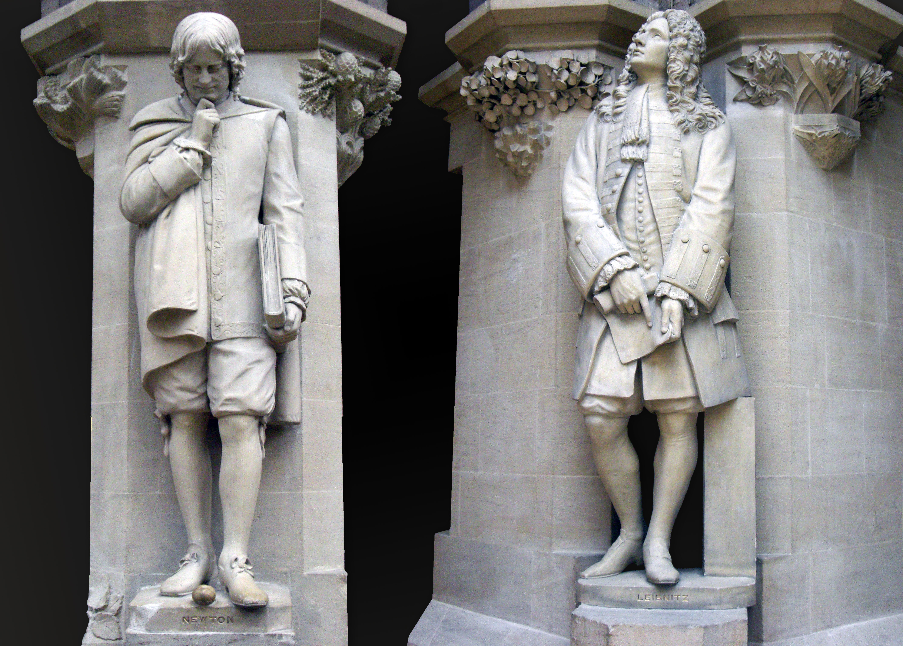

by Madi Crum
January 4, 1643 - March 31, 1727
Born in 1643 in Woolsthorpe, England was Isaac Newton. He was a son to an uneducated but wealthy farmer, who died some time before Newton was born. This caused his mother to remarry, and Newton was left with his grandmother. Although Newton was not the smartest at his school, he was offered to attend Trinity College Cambridge. He wanted to study law, but his mother would not pay for his education, leaving him to work as a servant during his time at college.
Meanwhile, Newton became incredibly curious about mathematics after buying a math book and not understanding the information it contained. He earned a bachelor’s degree in 1665 but was prevented from further education due to the plague. His college was closed due to the highly contagious disease (as I am sure we can all relate to), and Newton went home. He took this time in quarantine to pursue his own ideas in mathematics, physics, optics, and astronomy. When the college reopened, he took a fellowship to earn his master’s degree.
He had finished working on his three laws of motion by 1666, and later his works on universal gravitation, diffraction of light, centripetal force, and many other variations of studies. He became a leader in scientific research after all his remarkable works. However, his work came to a halt when he suffered a nervous breakdown in 1679.
After regaining his health, he once again continued to study and spoke out against King James II when he only wanted Roman Catholics to be in positions of government and academia. Once William of Orange chased King James II out of England, Newton was elected to Parliament, leading him to become more interested with the life of politics than research.
In 1693, Newton suffered from another nervous breakdown and ultimately retired from research. Newton was a man who was torn between his want for fame and fear of criticism, and he resisted publishing his work immediately because of this. He often felt like he had to defend his work against plagiarism, one dispute like this being between him and Gottfried Wilhelm Leibniz about calculus. This dispute dominated the last years of Newton's life. Newton died in 1727.
